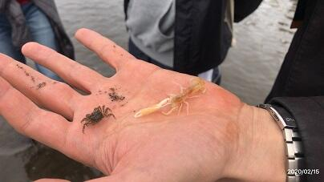

文字
背景
行間

_
就学支援金申請書類の提出について
生徒・保護者様へ
就学支援金申請書類の提出期限は６月５日（金）です。辞退される方も、意思確認書は必ず御提出ください。
※課税証明書で申請される方は、６月３日(水)までに事務室 川田まで御連絡ください。必要書類をお渡しします。
問い合わせ先 事務室 川田電話番号:043-484-1021
(受付時間:月～金 9:00～16:30)
エピペン・ＡＥＤ職員研修

１・３年生登校日

通学定期券の購入に関するお知らせ(新入生・保護者の皆様へ）
４月７日（火）入学式後のＨＲで通学証明書を配布された生徒の保護者様へ
入学式に配布しました通学証明書の有効期限が５月６日（水）になっていますが、有効期限が過ぎた場合でも定期券を購入できますので、学校再開が確定してからの購入をお願いいたします。
問い合わせ等は事務室 川田まで御連絡ください。
佐倉高校電話番号:043-484-1021
(受付時間:月～金 9:00～16:00)
千葉県奨学資金のご案内（事務室よりお知らせ）
事務室よりお知らせ
■ 保護者の皆様へ 【千葉県奨学資金のご案内】
奨学資金の案内が来ております。「千葉県奨学資金案内.pdf」をご覧ください。
ご相談や申請を希望される方は、事務室の担当 川田までご連絡ください。
佐倉高校電話番号:043-484-1021
(受付時間:月～金 9:00～16:00)
＊申請を希望される方には、書類の配付等必要に応じて来校していただくことが
あります。予めご了承ください。
千葉県奨学資金案内.ｐｄｆ ← 奨学資金の案内はここをクリック
保護者の皆様へ 【奨学金のご案内】
奨学金の案内が来ております。2020年度 奨学金案内.pdf をご覧ください。
ご相談や応募を希望される方は、それぞれの奨学金の校内申込締切日までに
奨学金担当（総務部 山口） までご連絡ください。
佐倉高校電話番号：043(484)1021
（受付時間：月～金 9:00～16:00）
＊ 5月7日（木）以降に学校が再開された場合は、 お子様を通してご連絡ください。
＊ 応募を希望される方には、書類の配付等必要に応じて来校していただくことがあります。予めご了承ください。
教育相談研修会
令和３年度教育実習の申込みについて
スクールカウンセラーについて
今年度より本校にスクールカウンセラーの方が着任されました。相談事などがある場合は、事前に予約を入れてください。臨時休業期間中の予約については学校までお電話ください。
令和２年度入学式・校章贈呈式
離退任式職員とのお別れ
第72回卒業証書授与式

PTA整備委員会の皆様によって飾られた花道 歴史と伝統、未来への飛躍を象徴する３本の校旗
同窓会入会式
 3月6日(金)、同窓会入会式が行われました。マスクの着用、大型加湿器の設置、ウィルス除菌製品の設置、椅子の間隔を十分にとるなど、十分に感染症拡大防止対策がとられた上での短時間の入会式でした。明日の卒業式も３年次生徒・保護者・教職員のみで実施され、内容も縮小されますが、心に残る素晴らしい式になるよう教職員一同、心を込めて祝福し、卒業生を送り出したいと思います。
3月6日(金)、同窓会入会式が行われました。マスクの着用、大型加湿器の設置、ウィルス除菌製品の設置、椅子の間隔を十分にとるなど、十分に感染症拡大防止対策がとられた上での短時間の入会式でした。明日の卒業式も３年次生徒・保護者・教職員のみで実施され、内容も縮小されますが、心に残る素晴らしい式になるよう教職員一同、心を込めて祝福し、卒業生を送り出したいと思います。 入学許可候補者発表
（写真は発表直後の様子です）
千葉県教育委員会の「千葉県合格発表サイト」でご確認できます。
（令和2年3月6日（金曜日）午前11時から令和2年3月10日（火曜日）までです）
なお、各受検生あての結果の通知については本日郵送しましたので到着次第ご確認ください。
前期選抜結果発表
なお、各受検生あての結果の通知については本日郵送しましたので到着次第ご確認ください。

理数科校外学習（盤洲干潟・県立中央博物館）
令和２年２月１５日（土）理数科校外学習（盤洲干潟・県立中央博物館）
理数科２年生の校外学習を行いました。
午前中は木更津市の盤洲干潟にて環境生態学実習，午後は県立中央博物館にて博物館学の講義と実習です。
盤洲干潟は国内最大級の干潟で，生物多様性保全上重要な湿地に指定されています。ちょうど干潮に向かう時間帯でしたので，大きな富士山が浮かぶ沖合いまで延々と歩いて行くことができました。干潟にある無数のカニ穴と砂団子，コメツキガニにスナモグリ，アカニシ，ツメタガイ，アラムシロ，ホソウミニナに大量のマテガイ，イボキサゴ…。平らな地形を足裏で感じながら，生物界と無生物界をつなぐ物質循環に思いを馳せた生態学実習でした。
干潟を後にしたバスは，一路県立中央博物館へ。
まずは本日開催初日となる『うめ もも さくら』展の会場にて，この日のために１年前から準備された水野研究員による博物館の機能についてのご講義です。まさに博物館学，展示論の真髄を平易な言葉でわかりやすく解説していただきました。なんと水野先生（植物生態学・博士），本校OBでありました。先生曰く「世の中は意外と狭いものです」。この他にも世の中の狭さを体現する驚きの事実が発覚し，生徒一同感嘆の声を上げた次第です。
続いて，上席研究員の黒住先生（貝類学），斉藤先生（昆虫分類学）によるスペシャルメニュー，収蔵庫見学バックヤードツアーです。博物館は研究機関であると同時に標本や資料を未来に継承する唯一の機関であると、多くの貴重な収蔵品を前に力のこもったご講義をいただきました。そしてそれぞれのご専門のお話になると，それはもう笑顔で楽しそう。まさに貝や昆虫に美と憧れを感じ，夢さえ抱いていらっしゃることが手に取るようにわかります。理屈ではない，好きだから好き，カッコええやんか。これが先生方の底流に脈々と流れ続けている研究活動のモチベーションなのですね。よくわかります，理数科なので…。
博物館の展示には担当者の思いが込められている，ということがよくわかりました。
お陰様で，博物館がより一層興味あるものになりました。
先生方，ありがとうございました。（石島）

魅力発見！県立学校
音楽Ⅱ「関西修学旅行の思い出を歌う」作品発表会

＜発表作品＞
『清水寺』
『夜の紅葉』
『閣々鹿々』
『cervo～イタリア語で鹿という意味～』
『修学旅行の歌の唄』
ほか
書道Ⅱ研究授業「漢字かな交じり書の創作」

２月６日（木）２時間目、書道の研究授業が行われました。漢字とかなの調和、効果的な構成を考えることをテーマに授業が展開されました。芸術の奥深さを実感できる興味深い授業でした。
東京外国語大学との連携協定締結調印式
東京外国語大学のウェブページにも紹介されました。